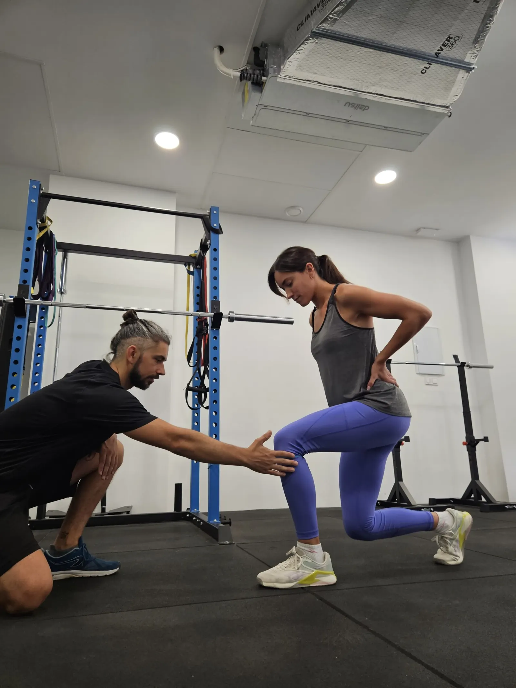

★★★★★
Vicente me ha tratado el hombro, ya no me duele y puedo seguir jugando al pádel. ¡Excelente profesional!
— Gustavo Alonso Villa · Google
Centro de fisioterapia y ejercicio terapéutico basado en la mejora de la fuerza
PEDIR CITA →Todo nuestro equipo está formado por fisioterapeutas graduados en ciencias del deporte con formación universitaria que basan sus prácticas en la evidencia científica, no en cursos de fin de semana o páginas de Instagram.
Más de 9 reseñas con la máxima valoración en Google. Lo que dicen quienes ya pasaron por aquí.
Vicente me ha tratado el hombro, ya no me duele y puedo seguir jugando al pádel. ¡Excelente profesional!
— Gustavo Alonso Villa · GoogleVicente es un gran fisio, muy profesional. Me trató un dolor de rodilla coordinado con mi entrenador. ¡Ya estoy jugando al pádel!
— Ariana Cisilino · GoogleMuy profesionales, trato amable y cercano tanto Edu como Vicente. 100% recomendable.
— Pilar Forte · GoogleGracias a IMSA he aumentado fuerza y estabilidad de cadera sin lesiones. ¡Súper recomendable!
— Silvana Colombelli · GoogleEdu llevó mi preparación física para el parto y post-parto. Personalizado, preciso y divertido.
— Lucía Folqués · GoogleTrato individualizado y profesional. Genial entrenar y recuperarte allí de una lesión.
— Lydia · GoogleExcelente, trato profesional y personalizado. Muy recomendable.
— María Ibáñez · GoogleProfesionalidad. Me he sentido muy escuchada y con trato totalmente individualizado.
— Mireya Albert · GooglePasé de no poder ponerme una chaqueta por dolor de hombro a jugar a bádminton semiprofesional. ¡100% recomendables!
— Yas Ezzatvar · Google